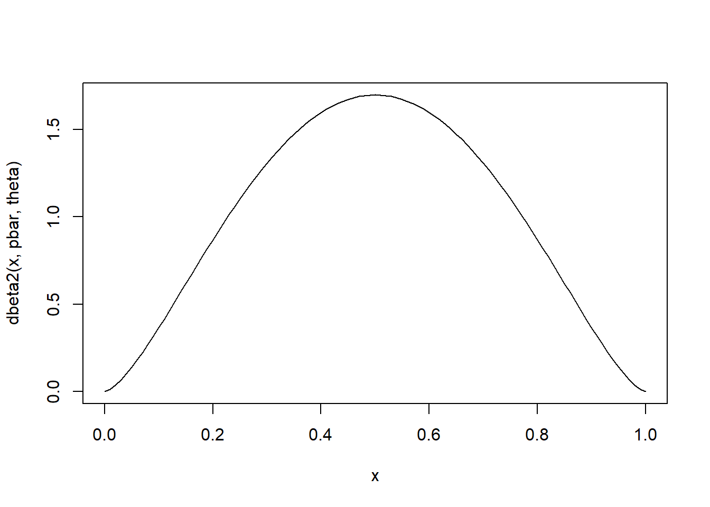
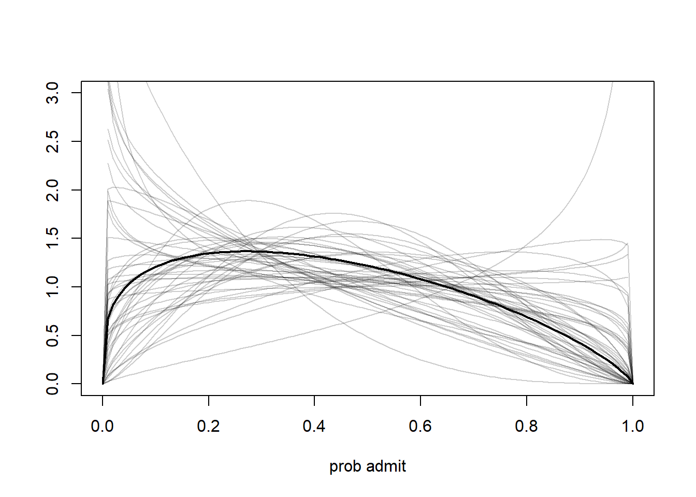
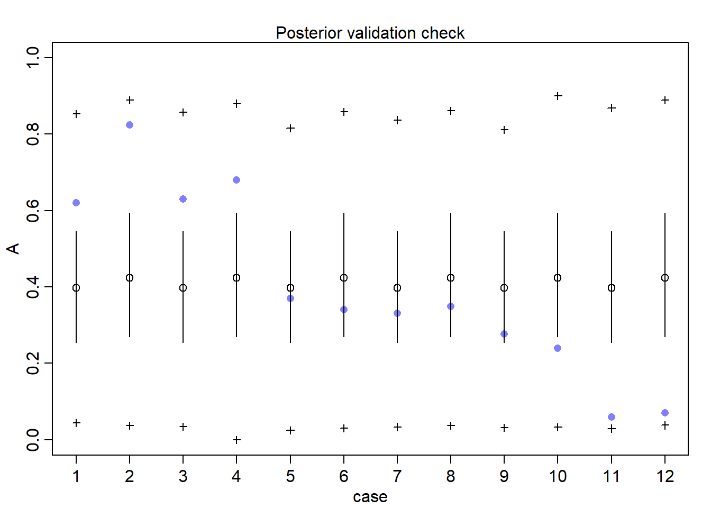
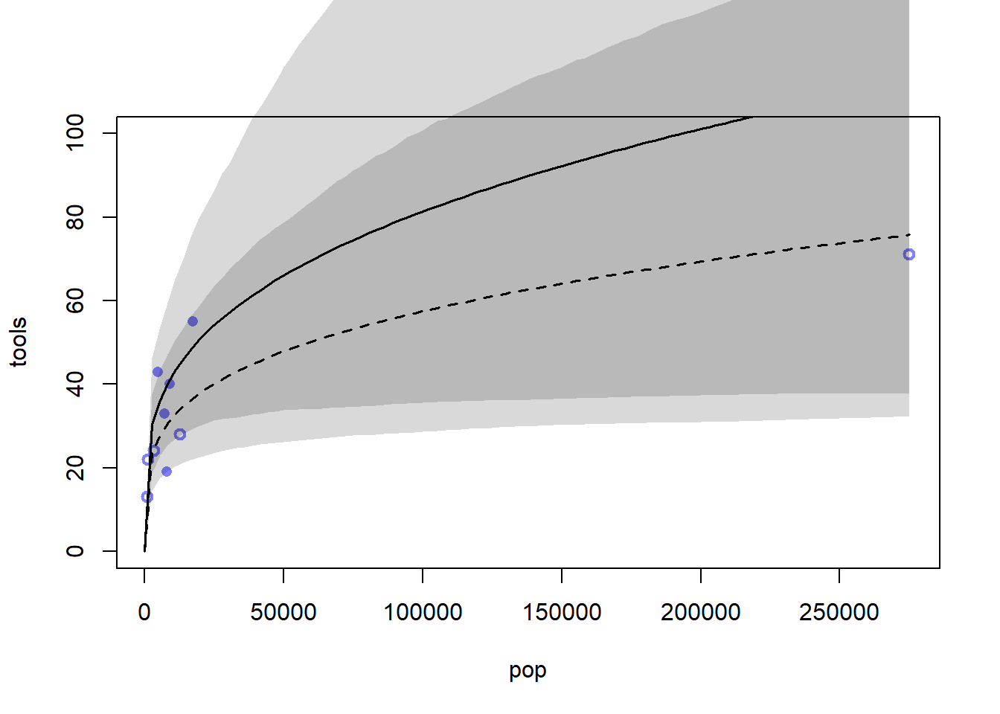
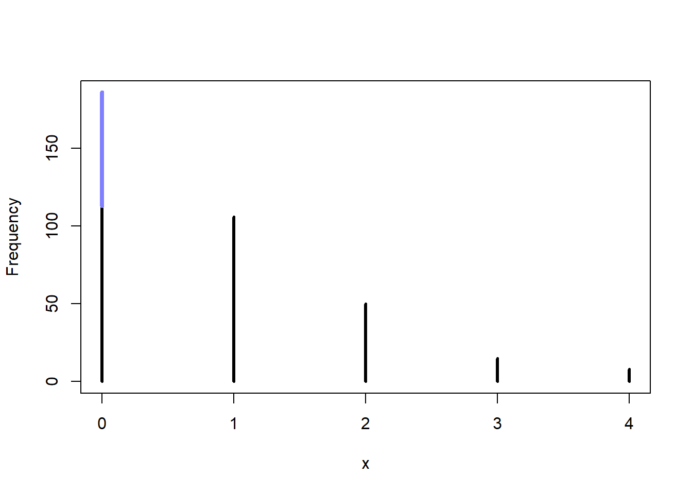

Code
library(rethinking)
library(dagitty)
library(tidyverse)library(rethinking)
library(dagitty)
library(tidyverse)When counts are more variable than a pure process, the exhibit over-dispersion. This implies that the variance is much larger than the mean. This usually implies that we are omitting a variable, and that is causing additional dispersion in the model.
As a rule of thumb, it is usually better to use multilevel models instead, but these models are still useful. Multilevel models can handle over-dispersion and other kinds of heterogeneity.
A beta-binomial arises when we model the probability of success as its own distribution for each observation. For example, the UCBadmit data set was over-dispersed if we don’t account for the variation between departments.
We use a beta distribution for each row in the data set.That is, each row gets its own unobserved probability distribution. We use a Beta because it is relatively easy to marginalize out the beta distribution and make the likelihood easier which we will see later.
We will use a different parameterization than usual for the beta. Here we have \((\bar{p}, \sigma)\) where \(\bar p\) is the average probability and \(\theta\) is the scale.
pbar <- 0.5
theta <- 5
curve(dbeta2(x, pbar, theta), 0, 1)
When \(\theta = 2\) then every probability is equally likely (for when \(\bar p = 0.5\)). When \(\theta < 2\), the distribution is so dispersed that extreme probabilities near zero and 1 are more likely than the mean.
This will be our model:
\[\begin{align} A_i &\sim \text{BetaBinomial}(N_i, \bar{p}_i, \theta) \\ \text{logit}(\bar{p}_i) &= \alpha_{\text{GID[i]}} \\ \alpha_j &\sim \text{Normal}(0, 1.5)\\ \theta &= \phi + 2 \\ \phi &\sim \text{Exponential}(1) \end{align}\]
where \(A\) is admit, \(N\) is the number of applications, and GID is the gender index. Since we don’t want the probability values to be piling up near 0 and 1, we make it so that the lower bound of \(\theta\) is 2.
data("UCBadmit")
d <- UCBadmit
d$gid <- as.integer(d$applicant.gender == 'female') + 1
dat <- list(A=d$admit, N=d$applications, gid=d$gid)
m12.1 <- ulam(alist(
A ~ dbetabinom(N, pbar, theta),
logit(pbar) <- a[gid],
a[gid] ~ dnorm(0, 1.5),
transpars> theta <<- phi + 2.0,
phi ~ dexp(1)
), data=dat, chains=4)Note that we are employing a “tag” transpars> so that Stan will tag the transformation in the “transformed variables” block. This is so Stan will return it in the samples. We don’t actually need to do the Jacobian adjustment here.
post <- extract.samples(m12.1)
post$da <- post$a[,1] - post$a[,2]
precis(post, depth=2) mean sd 5.5% 94.5% histogram
a[1] -0.4347256 0.3968770 -1.0746959 0.1811984 ▁▁▁▇▇▂▁
a[2] -0.3209208 0.4230386 -0.9922175 0.3725505 ▁▁▅▇▃▁▁
phi 1.0196774 0.7771234 0.0890295 2.4890899 ▇▇▅▂▁▁▁▁▁▁▁
theta 3.0196774 0.7771234 2.0890252 4.4890899 ▇▇▅▂▁▁▁▁▁▁▁
da -0.1138047 0.5693842 -1.0064607 0.8063047 ▁▁▃▇▇▂▁▁Look at da the difference in log-odds between the male and female effects. We see that we are uncertain about the difference and cannot rule out zero. This is different from the naive conclusion that we came to in the last chapter before we took into accounting the confounding variables. The difference here is that we are implicitly giving an intercept term to every row in the data set through the use of the beta binomial model.
To see this let’s look at a quick sim:
gid <- 2
curve(dbeta2(x, mean(logistic(post$a[,gid])), mean(post$theta)), 0,1, ylab='',
xlab='prob admit', lwd=2, ylim=c(0,3))
for (i in 1:50){
p <- logistic(post$a[i, gid])
theta <- post$theta[i]
curve(dbeta2(x, p, theta), add=T, col=col.alpha('black', 0.2))
}
Notice that the plausible distribution allows for departments to admit almost all applicants. We have allowed for over-dispersion!
Let’s see how it did at an observation level:
postcheck(m12.1)
The model doesn’t know about departments, but it does see the heterogeneity and accounts for it.
The negative-binomial is more usefully called the gamma-Poisson. Similarly to the Beta-Binomial, we replace the mean parameter with a distribution itself. In this case, it is a gamma distribution. Predictor variables adjust the shape (and mean) of this distribution, not the expected value of each observation.
The Gamma-Poisson distribution is parameterized as such:
\[y_i \sim \text{Gamma-Poisson}(\lambda_i, \phi)\]
where \(\lambda\) can be treated as the rate of the usual Poisson. The \(\phi\) must be positive and controls the variance. In turn, the variance of the Gamma-Poisson is \(\lambda + \lambda^2/\phi\). Notice that for larger values of \(\phi\) it converges to a usual Poisson.
Recall the Oceanic example from the previous chapter. There, Hawaii pulled the mean. Here, we expect much less since the Gamma-Poisson expects more variation.
data("Kline")
d <- Kline
d$P <- standardize(log(d$population))
d$contact_id <- ifelse(d$contact == 'high', 2L, 1L)
dat2 <- list(T = d$total_tools, P=d$population, cid=d$contact_id)
m12.1 <- ulam(alist(
T ~ dgampois(lambda, phi),
lambda <- exp(a[cid])* P^b[cid] / g,
a[cid] ~ dnorm(1,1),
b[cid] ~ dexp(1),
g ~ dexp(1),
phi ~ dexp(1)
), data=dat2, chains=4, log_lik=T)Recall that the \(\lambda\) function here was informed by the literature.
plot(d$population, d$total_tools, xlab='pop', ylab='tools',
col=rangi2, pch=ifelse(dat2$cid == 1, 1, 16), lwd=2, ylim=c(0,100))
ns <- 100
p_seq <- seq(0, max(dat2$P), length.out=ns)
for (i in 1:2){
lambda <- link(m12.1, data=data.frame(P=p_seq, cid=i))
lmu <- colMeans(lambda)
lci <- apply(lambda, 2, PI)
lines(p_seq, lmu, lty=ifelse(i==1,2,1), lwd=1.5)
shade(lci, p_seq, xpd=T)
}
Its hard to see from the graph alone, but if we compare to the model from ch 11, we see that the Hawaii exerts a lot less influence over the regression line.
The beta-binomial and gamma-poisson are still maximum entropy for the same constraints as the regular binomial and poisson.
Richie argues against using WAIC and PSIS here since we are modeling on aggregated data. It is true that the reason we get a nice response for the admission data is because we are allowing the model to vary by row. But, we could still compare this to a aggregated regular binomial model. We just couldn’t compare it to a dis-aggregated binomial model, but we already knew that. I think Richie is just arguing that if we were to instead dis-aggregate to the row level, we would lose the reason we built the beta-binomial model in the first place.
He also states that we will solve for this in the next chapter.
Just a quick overview: this all works because we are marginalzing out the parameter of interest. That is, the parameter/expected value that we were calculating in the previous chapter. Essential we have:
\[f(y|n, \bar p, \theta) = \int_0^1 g(y|n,p) h(p|\bar p, \theta) dp\]
where \(g\) is the binomial and \(h\) is the beta distribution. We are marginalizing out the very parameter that we were modeling in the previous chapter.
Mixture model: model that uses more than one likelihood for the same outcomes variable. In this case, we will use for the different ways in which a zero can manifest.
Going back to the monk and manuscript problem, let’s assume that zero manuscripts produced can occur in one of two ways. 1) they spent the day drinking, 2) they legitimately didn’t get any manuscripts done that day. Let \(p\) be the probability that they spent the day drinking and \(\lambda\) be the mean number of manuscripts completed when the monks work.
The likelihood for zero is then:
\[\begin{align} P(0|p, \lambda) &= P(\text{drink}|p) + P(\text{work}|p)\cdot P(0| \lambda) \\ &= p + (1-p) \exp (-\lambda) \end{align}\]
Note \(P(0|\lambda) = \exp(-\lambda)\) since \(P(y|\lambda) = \lambda^y \exp(-\lambda)/y!\).
It’s relatively simple to show:
\[p(y|y>0,\lambda)=(1-p) \frac{\lambda^y \exp(-\lambda)}{y!}\]
Since we know that they probability of drinking is zero since they produced more than zero manuscripts.
The \((1-p)\) is necessary to conserve total probability. For instance, if we sum over all possible values of \(y\) we must get 1. Now, if we didn’t have the \((1-p)\) term in front of the likelihood for the \(y>0\) case, we would be able to have a total probability greater than one if we sum of all \(y\).
Define the ZIPoisson as follows:
\[\begin{align} y_i &\sim \text{ZIPoisson}(p_i, \lambda_i) \\ \text{logit}(p_i) &= \alpha_p + \beta_p x_i \\ \log(\lambda_i) &= \alpha_\lambda + \beta_\lambda x_i \end{align}\]
Let’s simulate some data:
prob_drink <- 0.2
rate_work <- 1
N <- 365
drink <- rbinom(N, 1, prob_drink)
y <- (1-drink)*rpois(N, rate_work)
simplehist(y)
zero_drinks <- sum(drink)
zero_work <- sum(y==0 & drink == 0)
zero_total <- sum(y==0)
lines(c(0,0), c(zero_work, zero_total), lwd=4, col=rangi2)
Recall that we don’t actually get to see the # drink days, but we can see just how much they overwhelm the final distribution.
Let’s fit the model:
m12.3 <- ulam(alist(
y ~ dzipois(p, lambda),
logit(p) <- ap,
log(lambda) <- al,
ap ~ dnorm(-1.5, 1),
al ~ dnorm(1, 0.5)
), data=list(y=y), chains=4)precis(m12.3) mean sd 5.5% 94.5% rhat ess_bulk
ap -1.7091272 0.49846056 -2.603212 -1.04709570 1.004451 631.0934
al -0.1213434 0.09017381 -0.265725 0.02798335 1.004578 686.9868Convert back to the natural scale:
post <- extract.samples(m12.3)
mean(inv_logit(post$ap))[1] 0.1635415mean(exp(post$al))[1] 0.889335Notice we get a nice estimate for the proportion of days they drink, but we are unable to say which days the monks drank.